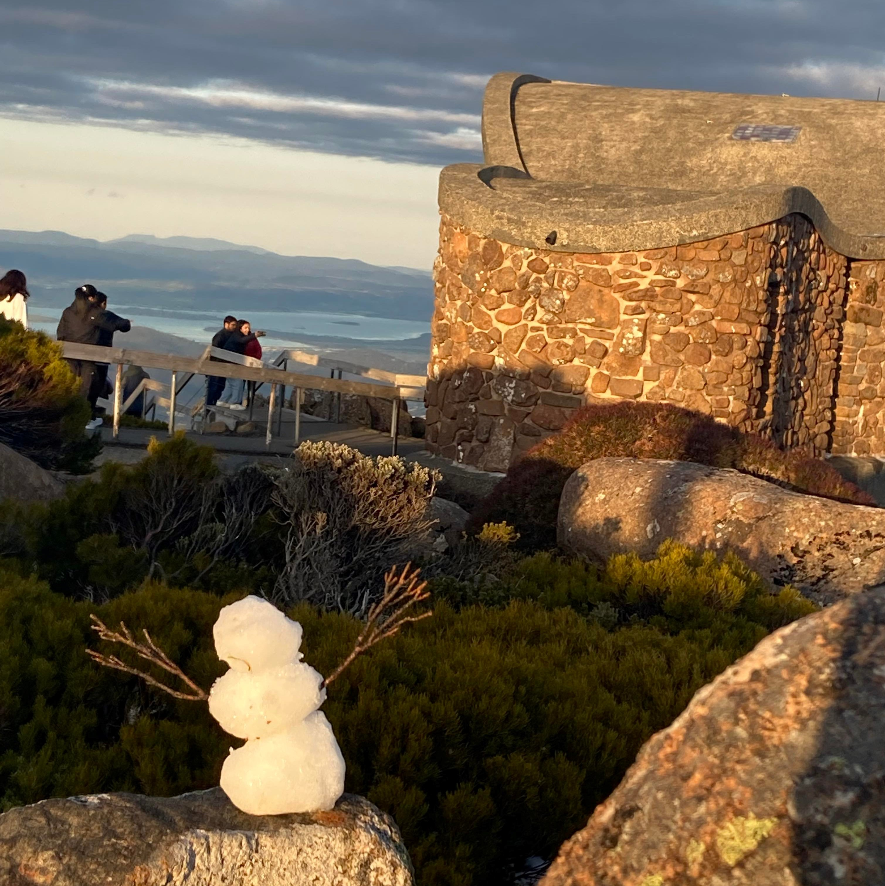

After trekking over 2km I was finally able to reach the summit of Mt Wellington! The less adventurous
also have the option of taking a car or bus up the mountain. The amazing view was
accompanied by some native wildlife, as well as a new discovery, found by yours truly!
Wallabies
On the top of the mountain, there is fairly flat land which wallabies appear to inhabit. While
observing these animals, I noticed that they seemed to move from the safety of bushy trees to the
plains in order to eat. I hope that meal is worth it!

New Discovery?
While exploring the area I came across a very strange animal! It appeared to not be able to move at
all and does not seem to have any way to speak or see. I have never seen this animal before, so I
would like to declare that it should be called a Tasman, based on my own name!
